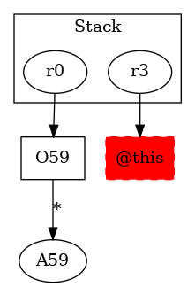

-1 : r3 := @this: Test6
59 : r0 = newarray (testcase.Test6)[10] ->class soot.jimple.internal.JAssignStmt {Left: class soot.jimple.internal.JimpleLocal, Right: class soot.jimple.internal.JNewArrayExpr}
60 : r1 = r0[4]
61 : $r2 = new testcase.Test6
61 : specialinvoke $r2.|testcase.Test6: void |init|()|()
61 : r0[4] = $r2
62 : return r1
